Learn through play.
Move a card. Build a model. Test an idea. Find games for Y7 Maths and Y10 Physics and Chemistry, with hints, explanations and a chance to try again.
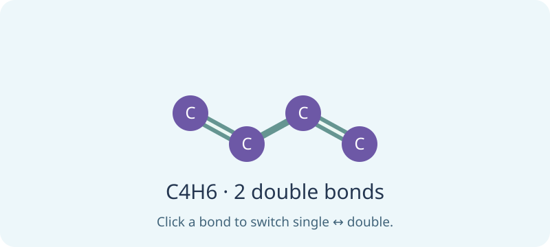
Year 7 Maths
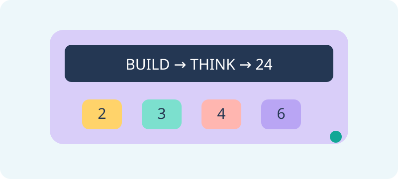
Numbers I
Factor Arcade
The 24 Machine
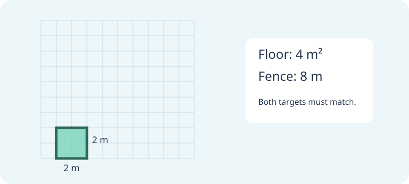
Geometry I
Angle Dominoes
Fence & Floor

Numbers II
Integer Skyline
Number-Line Rover

Algebra I
Rule Detectives
Coordinate Quest
Mystery Machine Mission
Proportion Paintworks
Variable Spotter
Coordinate Detective
Mystery Picture Studio
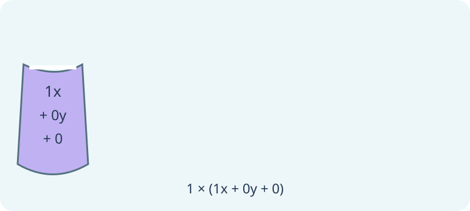
Boxes & Brackets
Like-Terms Recycling
Bag Factory
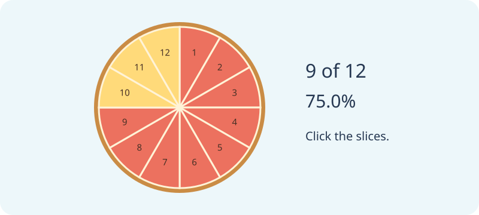
Numbers III
Fraction Café
Pizza Proportions
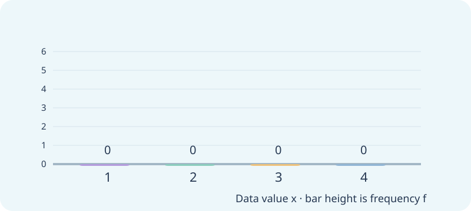
Statistics
Data Detectives
Frequency Factory
Year 10 Physics
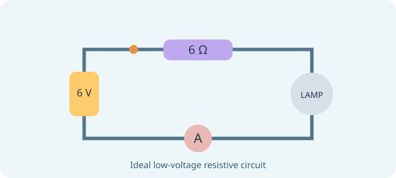
Electricity
Circuit Snap
Circuit Rescue

Waves & Sound
Wave Matchmakers
Wave DJ
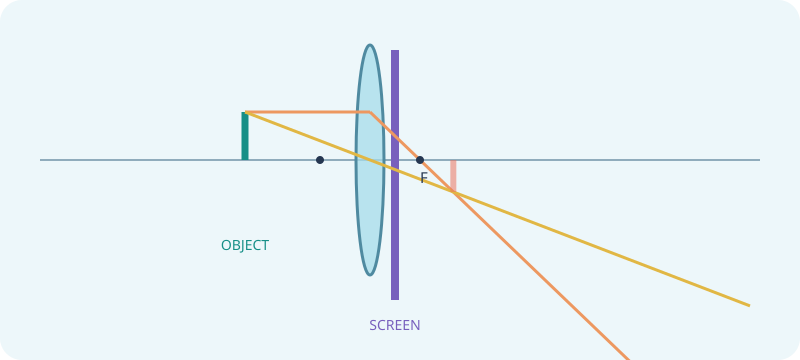
Optics & Cameras
Ray Detective
Focus Finder

Thermal Physics
Heat Transfer Dispatch
Energy Budget Kitchen
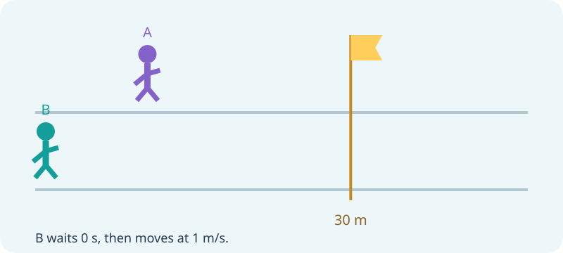
Motion & Projectiles
Motion Storyboards
Catch-Up Flag
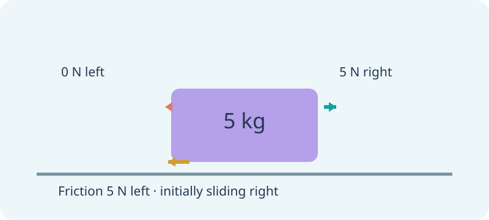
Forces & Dynamics
Force Bureau
Tugboat Targets
Year 10 Chemistry

Acids & Bases
Reaction Recipe Cards
Neutralisation Drop Quest
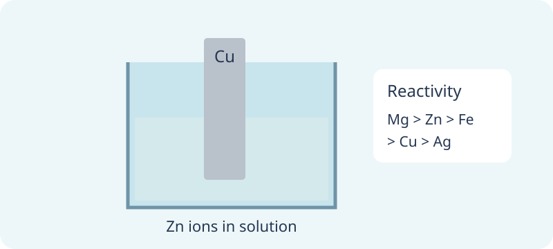
Metals
Reactivity Ladder
Displacement Vault
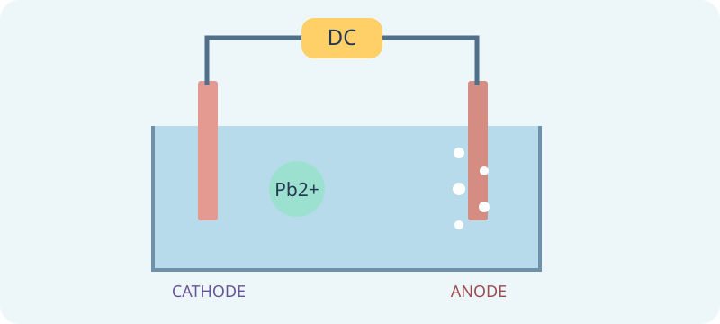
Redox & Electrolysis
Electron Exchange
Electron Delivery
Organic Chemistry
Molecule Families
Carbon Chain Studio
Game ideas and online references
These games combine familiar classroom formats—24, matching pairs, card sorts and ordering—with original Learning Lab target puzzles. The pictures, challenges, explanations and code here were created for this platform.
Explore the related PhET resources below for more ways to investigate these ideas.
- Area Builder: area and perimeter targets — Geometry I.
- Number Line: Integers: comparing signed positions — Numbers II.
- Expression Exchange: build expressions to match targets — Boxes & Brackets.
- Proportion Playground: bead, paint and billiards models — Algebra I and Numbers III.
- Fractions Suite: matching and building games — Numbers III.
- Fractions: Equality: equivalent representations — Numbers III.
- Graphing Lines: relating equations and graphs — Algebra I.
- Wave on a String: frequency, amplitude and travelling waves — Waves.
- Forces and Motion: Basics: net force and motion — Dynamics and motion.
- Ohm’s Law, Bending Light and Energy Forms and Changes — related electricity, optics and thermal resources.
- Acid-Base Solutions: strength and concentration models — Acids and Bases.
- Balancing Chemical Equations: conservation puzzles — Redox and organic reaction balances.
- Build a Molecule: constructing molecules — Organic Chemistry.
Factor sorting, signed-number ordering, like-term sorting and reactivity ladders use familiar classroom game structures. The rover, bag factory, displacement vault, electron-delivery challenge and diene balance are original topic-specific designs, not claims of an official PhET game or a globally new invention.
Game scores stay on the page. Only the separate revision simulator’s Test yourself mode can submit results to the teacher dashboard.